무선설비산업기사 (2016-05-08 기출문제)
1과목: 디지털 전자회로
1. 전원 주파수가 60[Hz]인 정류회로에서 출력이 120[Hz]인 리플 주파수를 나타내는 회로방식은 무엇인가?
- 3상 반파정류회로
- 3상 전파정류회로
- 단상 반파정류회로
- 단상 전파정류회로
(정답률: 86%)

2. 정전압 전원장치에서 무부하시 직류출력전압이 150[V]이고, 부하시 직류 출력전압이 100[V]일 때 전압 변동률은?
- 50[%]
- 30[%]
- 20[%]
- 10[%]
(정답률: 79%)
3. 다음 중 트랜지스터 증폭기의 바이어스 안정도를 나타내는 숫자로 가장 좋은 것은?
- 1
- 2
- 3
- 4
(정답률: 87%)
4. 다음 중 열잡음(Thermal Noise)과 백색 잡음(White Noise)과의 관계에 대한 설명으로 옳은 것은?
- 열잡음(Thermal Noise)은 Color Noise이므로 백색 잡음(White Noise)과 완전하게 다르다.
- 열잡음(Thermal Noise)은 흑색 잡음이므로 백색 잡음(White Noise)과는 반대의 특성을 갖는다.
- 열잡음(Thermal Noise)은 실제로 발생하는 잡음 중에서 백색 잡음(White Noise) 특성에 유사한 잡음 중 하나에 속한다.
- 열잡음(Thermal Noise)과 백색 잡음(White Noise)은 완전하게 일치하는 용어이다.
(정답률: 83%)
5. 트랜지스터 증폭기의 입력전력이 1[mW]이고, 출력전력이 2[W]일 때 증폭기의 전력이득은 약 얼마인가?
- 12[dB]
- 23[dB]
- 33[dB]
- 45[dB]
(정답률: 73%)
6. 다음 중 2단 이상의 증폭기에서 잡음을 줄일 수 있는 가장 효과적인 방법은?
- 종단 증폭기의 이득은 첫단 증폭기에 비해 가능한 낮게 설계한다.
- 첫단 증폭기는 가능한 이득이 큰 증폭기로 구성한다.
- 첫단 증폭기를 트랜지스터(쌍극성 트랜지스터) 증폭기로 구성한다.
- 첫단 증폭기를 잡음지수(Noise Figure)가 낮은 증폭기로 구성한다.
(정답률: 84%)
7. 다음 그림과 같은 콜피츠 발진기의 발진 주파수(fo)는?
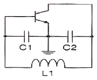
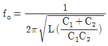
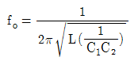
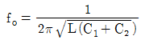
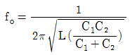
(정답률: 77%)
8. 수정 발진회로에서 수정 진동자의 전기적 직렬 공진 주파수를 fs, 병렬 공진 주파수를 fp라 할 때, 가장 안정된 발진을 하기 위한 조건은? (단, fa는 발진 주파수이다.)
- fp ＜ fa ＜ fs
- fa = fs
- fs ＜ fa ＜ fp
- fa = fp
(정답률: 91%)
9. 진폭 변조에서 변조도가 1일 때 반송파의 전력이 2[W]일 경우 상측파와 하측파의 전력은 얼마인가?
- 상측파 : 2[W], 하측파 : 2[W]
- 상측파 : 0.5[W], 하측파 : 0.5[W]
- 상측파 : 2[W], 하측파 : 1[W]
- 상측파 : 1[W], 하측파 : 0.5[W]
(정답률: 79%)
10. 신호의 표본값에 따라 펄스의 진폭은 일정하고 그 위상만 변화하는 변조방식은?
- PCM
- PPM
- PWM
- PFM
(정답률: 70%)
11. 다음 중 펄스부호변조(PCM)의 송신측 과정이 아닌 것은?
- 복호화
- 양자화
- 표본화
- 부호화
(정답률: 90%)
12. 다음 중 펄스신호에 대한 설명으로 틀린 것은?
- 상승시간이란 펄스의 진폭의 10[%]에서 90[%]까지 상승하는데 걸리는 시간을 말한다.
- 하강시간이란 펄스의 진폭의 90[%]에서 10[%]까지 하강하는데 걸리는 시간을 말한다.
- 펄스 폭이란 펄스 파형이 상승 및 하강의 진폭의 66.7[%]가 되는 구간의 시간을 말한다.
- 오버슈트란 상승 파형에서 이상적 펄스파의 진폭보다 높은 부분을 말한다.
(정답률: 87%)
13. 다음 중 클리퍼(Clipper) 회로에 대한 설명으로 옳은 것은?
- 입력 파형을 주어진 기준전압 레벨 이상 또는 이하로 잘라내는 회로
- 일정한 레벨 내에서 신호를 고정시키는 회로
- 특정 시각에 발진 동작을 시키는 회로
- 안정 상태와 준안정 상태를 번갈아 동작하는 회로
(정답률: 89%)
14. 한글코드는 ASCII 코드를 기반으로 하여 몇 비트(Bit)를 하나의 문자로 표현하는가?
- 8비트
- 16비트
- 32비트
- 64비트
(정답률: 74%)
15. 두 입력이 1과 0일 때, 1의 출력이 나오지 않는 게이트는?
- OR 게이트
- NOR 게이트
- NAND 게이트
- XOR 게이트
(정답률: 75%)
16. 다음 논리회로도가 나타내는 플립플롭회로는 무엇인가?
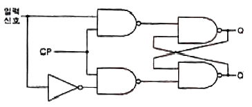
- T 플립플롭
- D 플립플롭
- J-K 플립플롭
- S-R 플립플롭
(정답률: 85%)
17. 다음의 진리표에 대한 논리회로 기호로 맞는 것은?
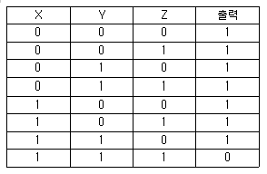
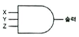
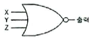
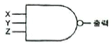
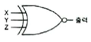
(정답률: 84%)
18. 다음 중 X, Y 두 입력을 갖는 2진 비교기에 대한 내용으로 틀린 것은?
- X = Y 일 때,

- X ≠Y 일 때, X ⊕ Y
- X > Y 일 때,

- X < Y 일 때,

(정답률: 64%)
19. 다음 그림과 같이 2n개(0~7)의 10진수 입력을 넣었을 때, 출력이 2진수(000~111)로 나오는 회로의 명칭은?
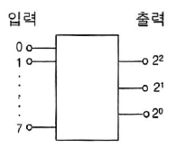
- 디코더 회로
- A-D 변환회로
- D-A 변환회로
- 인코더 회로
(정답률: 73%)
20. 다음 중 기억된 정보를 보존하기 위하여 주기적으로 리플레시(Refresh)를 해주어야만 하는 기억소자는?
- Dynamic ROM
- Static ROM
- Dynamic RAM
- Static RAM
(정답률: 85%)
2과목: 무선통신 기기
21. 다음 중 디지털 변복조기에 사용하는 변조 기술이 아닌 것은?
- ASK(Amplitude Shift Keying)
- PCM(Pulse Code Modulation)
- QAM(Quadrature Amplitude Modulation)
- PM(Phase Modulation)
(정답률: 77%)
22. 다음 중 계기 착륙 장치(ILS)의 3대 구성 요소가 아닌 것은?
- 착륙코스의 수평 위치지시(Localizer)
- 착륙코스의 수직 위치지시(Glide Path)
- 마아커 비콘(Maker Beacon)
- 랜딩 기어(Landing Gear)
(정답률: 73%)
23. 디지털 데이터 “0”과 “1”을 FSK(Frequency Shift Keying) 통신 방식으로 변조할 경우 몇 개의 반송파가 필요한가?
- 1개
- 2개
- 3개
- 4개
(정답률: 85%)
24. 다음 중 수신기의 전기적 성능을 판단하는 항목으로 옳은 것은?
- 감도, 선택도, 안정도, 충실도
- 감도, 선택도, 변조도, 충실도
- 변조도, 충실도, 좌우 분리도, 전력효율
- 변조도, 안정도, 좌우 분리도, 전력효율
(정답률: 85%)
25. 다음 중 FM송신기와 관계가 없는 것은?
- 순간편이제어(IDC)
- 위상변조(PM)
- 프리엠퍼시스(Pre-emphasis)
- 진폭제한기(Limiter)
(정답률: 60%)
26. 다음 이동통신에 사용되는 무선 채널제어 중 역방향 채널제어에 해당하는 것은?
- Pilot Channel
- Sync Channel
- Access Channel
- Paging Channel
(정답률: 84%)
27. 다음 중 원자를 구성하고 있는 전자의 에너지 준위를 변경시킴으로써 발생되는 에너지를 이용하는 마이크로파(Microwave)용 소자는?
- 자전과(Magnetron)
- 메이저(Maser)
- 진행파관(TWT)
- 클라이스트론(Klystron)
(정답률: 62%)
28. 이동전화시스템엇 기지국이 호(Call)를 처리하는 구역을 의미하는 것은?
- Bit
- Call
- Cell
- Base Station
(정답률: 86%)
29. 다음 중 위성통신시스템의 지구국 안테나가 갖추어야 할 특성으로 적합하지 않은 것은?
- 고이득
- 고정성
- 지향성
- 광대역성
(정답률: 69%)
30. 다음 중 마이크로파(Microwave) 통신방식의 특징에 대한 설명으로 틀린 것은?
- 가시거리내의 통신이 가능하다.
- 대형 안테나로 파장이 긴 전파를 이용한다.
- 우주통신에 많이 이용된다.
- 지향성이 예민하다.
(정답률: 74%)
31. 다음 중 저궤도 위성통신을 정지궤도 위성통신과 비교할 때 유리한 점이 아닌 것은?
- 전파지연 감소
- 소요되는 위성 수 감소
- 소형안테나 및 소전력의 이동국
- 고 신뢰성과 양호한 통화품질
(정답률: 70%)
32. 다음 중 UPS(Uninterruptible Power Supply) 전원 사용 목적으로 적합하지 않은 것은?
- 교류 또는 직류 전원을 장기간 사용하고자 하는 경우
- 교류 전원을 무순단으로 사용하고자 하는 경우
- 입력 전원의 장애로 인하여 직접적인 전원 사용이 어려운 경우
- 교류 입력전원 자체가 불안정한 경우
(정답률: 72%)
33. 극판의 연결 상태나 전지의 연결 상태의 차이로 생기는 충전 부족을 보충하기 위한 충전방식은?
- 과 충전
- 평상 충전
- 균등 충전
- 부동 충전
(정답률: 90%)
34. 다음 중 태양전지에 대한 설명으로 틀린 것은?
- 태양전지의 기판 종류에는 단결정 실리콘 웨이퍼가 있다.
- 태양전지는 태양광의 광전효과를 이용하여 전기를 생산한다.
- 태양전지의 양단에 외부도선을 연결하면 P형 쪽의 전자가 도선을 통해 N형 쪽으로 이동하게 되면서 전류가 흐르게 된다.
- 태양전지 에너지원은 청정, 무제한이다.
(정답률: 91%)
35. 고니오미터(Goniometer)는 무엇을 측정할 때 사용하는가?
- 방송출력
- 상호인덕턴스
- 전파의 도래각
- 대지의 정전용량
(정답률: 84%)
36. 1:2 전원변압기를 통해 AC 100[V]의 교류입력이 전파 정류될 경우 출력되는 평균 DC전압은 약 얼마인가?
- 300[V]
- 270[V]
- 200[V]
- 180[V]
(정답률: 76%)
37. 수신기 입력이 10[μV]의 전압을 인가하였을 때 출력 전압이 10[V]일 경우 수신기의 감도는 몇 [dB]인가?
- 60[dB]
- 80[dB]
- 100[dB]
- 120[dB]
(정답률: 69%)
38. 진폭 2[V], 주파수 2[kHz]의 신호파를 진폭 5[V], 주파수 2[MHz]의 반송파로 진폭 변조할 경우 변조율은 얼마인가?
- 60[%]
- 50[%]
- 40[%]
- 30[%]
(정답률: 68%)
39. 다음 중 안테나의 특성 측정항목이 아닌 것은?
- 고유파장
- 접지저항
- 이득
- 군속도
(정답률: 82%)
40. 다음 중 무선송신기의 종합 특성으로 틀린것은?
- 점유주파수대폭
- 스퓨리어스
- 주파수 안정도
- 영상주파수
(정답률: 72%)
3과목: 안테나 개론
41. 다음 중 전파의 성질에 대한 설명으로 틀린 것은?
- 전파는 종파이다.
- 전파는 균일 매질내에서 직진한다.
- 주파수가 낮을수록 회절하는 성질이 있다.
- 굴절율이 다른 매질의 경계면에서는 빛과 같이 반사하고 굴절한다.
(정답률: 89%)
42. 전파의 속도는 매질의 어느 것에 의하여 변화되는가?
- 유전율과 투자율
- 유전율과 도전율
- 투자율과 도전율
- 도저율과 비유전율
(정답률: 87%)
43. 자유공간 내에서 전계강도가 100[mV/m]인 경우 전력밀도는?
- 2.7[mW/m2]
- 0.27[mW/m2]
- 0.027[mW/m2]
- 0.0027[mW/m2]
(정답률: 71%)
44. 다음 중 동조 급전선의 특징에 대한 설명으로 틀린 것은?
- 정합장치가 불필요하다.
- 급전선 상에 정재파를 실어 급전한다.
- 전송효율이 비동조 급전선보다 좋다.
- 급전선의 길이와 파장은 일정한 관계가 있다.
(정답률: 72%)
45. 다음 분포정수회로에 의한 정합 방법 중 동축 급전선과 안테나의 정합에 적용할 수 없는 것은?
- Taper에 의한 정합
- Stub 정합
- Omega 정합
- Gamma 정합
(정답률: 73%)
46. 다음 중 초고주파 대역에서 사용되는 수동소자에 대한 설명으로 틀린 것은?
- 어떤 전송 선로로 전달되는 전력의 크기 등을 측정할 때 방향성 결합기가 사용된다.
- 전력의 두 개 이상의 작은 전력으로 나누는데 전력분배기가 사용된다.
- 감쇠기는 마이크로파 전력의 크기를 감소시키는데 사용되는 소자이다.
- 아이솔레이터와 서큘레이터는 신호를 한쪽 방향으로 전달하거나 반대방향으로도 전달하는 가역 특성을 갖는다.
(정답률: 79%)
47. 다음 중 TM파(Transverse magnetic Wave)에 대한 설명으로 틀린 것은?
- H파라고도 한다.
- E파라고도 한다.
- 축방향(진행방향)에 전계성분은 있다.
- 축방향(진행방향)에 자계성분은 없다.
(정답률: 74%)
48. εs=5, μs=10인 매질 내에서 전파의 속도는? (단, εs : 비유전율, μs : 비투자율)
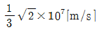
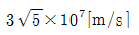
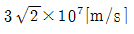
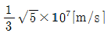
(정답률: 72%)
49. 다음 중 지향성 안테나는?
- 휩 안테나
- 브라운 안테나
- 슬리브 안테나
- 콜리니어 어레이 안테나
(정답률: 71%)
50. 다음 중 사용하고자 하는 주파수의 파장을 λ, 안테나의 공진파장을 λ0라고 할 때, λ > λ0인 경우 안테나를 공진시키기 위해 추가로 삽입하기 적합한 소자는?
- 제너(Zener) 다이오드
- 저항
- 단축 콘덴서
- 연장 코일
(정답률: 83%)
51. 다음 중 절대이득의 기준 안테나로 적합한 것은?
- 루프 안테나
- 무손실 전방향성 안테나
- 무손실 등방성 안테나
- 무손실 반파장 다이폴 안테나
(정답률: 64%)
52. 다음 중 건조지, 건물, 암반, 옥상 등 대지의 도전율이 나쁜 곳에 적합한 접지방식은?
- 심굴접지
- 다중접지
- 가상접지(Counterpoise)
- 방사상접지
(정답률: 77%)
53. 다음 중 수신기에서 수신 전력을 증가시키는 방법으로 틀린 것은?
- 안테나에 LNA를 설치하여 수신단 잡음을 줄인다.
- 지향성이 낮은 안테나를 사용한다.
- 이득이 높은 안테나를 사용한다.
- 실효고가 높은 안테나를 사용한다.
(정답률: 75%)
54. 주파수 6[MHz]의 전파에 사용하는 λ/4 수직접지 안테나의 길이는?
- 50[m]
- 25[m]
- 12.5[m]
- 6.25[m]
(정답률: 67%)
55. 다음 중 대류권 전파의 감쇠에 해당되지 않는 것은?
- 강우에 의한 감쇠
- 구름, 안개에 의한 감쇠
- 바람에 의한 감쇠
- 대기에 의한 감쇠
(정답률: 87%)
56. 다음 중 장중파 대역에서 지표파에 의해 전파되는 전파의 감쇠가 가장 작은 환경은?
- 해상
- 평지
- 사막
- 도시지역
(정답률: 86%)
57. 전리층 전자밀도의 불규칙한 변동에 의해 전파가 전리층을 시각에 따라 반사하거나 투과함으로써 발생하는 페이딩은?
- 편파성 페이딩
- 흡수성 페이딩
- 도약성 페이딩
- 간섭성 페이딩
(정답률: 65%)
58. 송신 안테나의 높이가 16[m], 수신 안테나 높이가 25[m]일 때 초단파의 직접파 최대 가시거리는 얼마인가?
- 16.99[km]
- 26.99[km]
- 36.99[km]
- 46.99[km]
(정답률: 75%)
59. 다음 중 초단파의 전파 특성에 대한 설명으로 틀린 것은?
- 주파수가 높기 때문에 지표파는 감쇠가 심하다.
- 태양의 활동에 따라 수신 강도의 변화는 단파보다 영향이 심하다.
- 대기의 굴절 때문에 기하학적 가시거리보다 약간 멀리까지 도달한다.
- 직접파와 대지 반사파에 의해서 전계강도가 정해진다.
(정답률: 63%)
60. 어떤 파동의 파동원과 관찰자의 상대속도에 따라 진동수와 파장이 바뀌는 현상을 무엇이라 하는가?
- 에코(Echo)
- 도플러(Doppler) 효과
- 패러데이(Faraday) 법칙
- 플라즈마(Plasma) 현상
(정답률: 79%)
4과목: 전자계산기 일반 및 무선설비기준
61. 2진수 10101101.0101을 8진수로 변환한 것으로 옳은 것은?
- 255.22
- 255.23
- 255.24
- 3E.A1
(정답률: 74%)
62. 다음 중 다중프로세서(Multiprocessor) 시스템에 대한 설명으로 옳은 것은?
- 프로세서나 복잡한 컴퓨터들이 노드를 이루면서 동작하는 시스템
- 제어방식이 복합적이면서도 밀접한 관계를 유지하면서 동작하는 시스템
- 병렬적이면서 동기적인 컴퓨터 시스템에서 동시에 여러 개의 태스크(Task)를 수행하는 시스템
- 플린(Flynn)의 MIMD구조로 둘 이상의 프로세서를 가진 시스템
(정답률: 64%)
63. 다음 중 컴퓨터가 중간 변환 과정 없이 직접 이해할 수 있는 언어는 무엇인가?
- 기계어
- 어셈블리어
- ALGOL
- PL/1
(정답률: 84%)
64. 10진수 284의 9의 보수, 10의 보수를 순서대로 나열한 것은?
- 709, 710
- 711, 712
- 713, 714
- 715, 716
(정답률: 67%)
65. 마이크로프로세서의 병렬처리 방식 중 동시수행가능 명령어 등을 컴파일러로 검출하여 하나의 명령어 코드로 압축하는 동시수행기법을 무엇이라 하는가?
- VLIW(Ver Large Instruction Word)
- Super-Scalar
- Pipeline
- Super-Pipeline
(정답률: 79%)
66. 다음 중 프로그램 언어의 조건으로 틀린 것은?
- 다양한 응용 문제를 해결할 수 있어야 한다.
- 명령문이 통일성 있고 단순, 명료해야 한다.
- 가능한 외부적인 지원은 차단하고, 많은 내부적 지원이 가능해야 한다.
- 언어의 확장성이 좋으며 구조가 간단하고 분명해야 한다.
(정답률: 90%)
67. 다음 중 표(Table) 및 배열(Array) 구조의 데이터를 처리하고자 할 경우 명령어들의 유용한 주소 지정 방식은?
- 간접 주소 지정
- 메모리 참조 주소 지정
- 인덱스 주소 지정
- 직접 주소 지정
(정답률: 71%)
68. 다음 중 교착상태(Deadlock)의 필요조건이 아닌 것은?
- 선점
- 점유(보유)와 대기
- 상호배제
- 환형대기
(정답률: 79%)
69. 주 기억장치에 지장된 명령어를 하나하나씩 인출하여 연산코드 부분을 해석한 다음 해석한 결과에 따라 적합한 신호로 변환하여 각각의 연산 장치와 메모리에 지시 신호를 내는 것은?
- 연산 논리 장치(ALU)
- 입출력 장치(I/O Unit)
- 채널(Channel)
- 제어 장치(Control Unit)
(정답률: 74%)
70. 다음 중 운영체제의 기능에 대한 설명으로 틀린 것은?
- 프로세스 생성과 제거, 메시지 전달 등의 기능을 수행한다
- 메모리 할당과 메모리 회수 등의 기능을 수행한다.
- 입출력 스케줄링과 주변장치의 전반적인 관리를 수행한다.
- 파일의 생성 및 삭제, 변경, 보관, 저장은 사용자가 직접 관리한다.
(정답률: 75%)
71. 다음 중 무선설비의 기술기준 적합성 평가절차에서 “본 기자재는 고정된 시설에만 설치ㆍ사용할 수 있습니다.”라는 문구를 명시한 경우 생략 할 수 있는 시험 항목은?
- 온도 및 습도
- 진동 및 충격
- 낙하 및 진동
- 연속동작 및 수밀
(정답률: 76%)
72. 전파법령에서 “무선국에서 사용하는 주파수마다의 중심 주파수를 말한다.”로 정의되는 용어는?
- 지정주파수
- 기준주파수
- 특성주파수
- 분배주파수
(정답률: 56%)
73. 송신설비의 안테나ㆍ급전선 등 고압전기를 통하는 장치는 사람이 보행하거나 기거하는 평면으로부터 얼마 이상의 높이에 설치되어야 하는가?
- 1.5미터
- 2.5미터
- 3.5미터
- 4.5미터
(정답률: 86%)
74. 다음 중 송신설비의 전력을 표시하는 방법에 대한 설명으로 틀린 것은?
- 송신설비의 전력은 공중선전력으로 표시한다.
- 비상위치 지시용 무선표지설비나 실험국 및 아마추어국의 송신 설비 등은 규격전력으로 표시한다.
- 전파이용질서의 유지 및 보호를 위하여 필요한 경우에는 등가등방 복사전력 또는 실효복사전력을 함께 표시할 수 있다.
- 종단 송신설비의 전력은 변조전력으로 표시한다.
(정답률: 63%)
75. 다음 중 지정시험기관 적합등록을 하지 않아도 되는 기기는?
- 정보기기류
- 형광등 등 조명기기류
- 가정용 전기기기
- 이동통신용 무선설비의 기기
(정답률: 57%)
76. 다음 중 전파법에 따른 주파수 사용승인 유효기간으로 틀린 것은?
- 국방부장관이 관리ㆍ운용하는 무선국 : 10년
- 주한외국 공관이 대한민국에서 외교 및 영사업무를 수행하기 위하여 외교통상부장관에게 요청에 따라 개설한 무선국 : 5년
- 국가안전보장과 관련된 정보 및 보안업무를 관장하는 기관의 장이 관리ㆍ운용하는 무선국 : 10년
- 아메리카 합중국 군대가 관리ㆍ운용하는 무선국 : 10년
(정답률: 64%)
77. 다음 중 무선설비 설계변경 및 계약금액 조정관리 감리업무에 대한 내용으로 옳은 것은?
- 발주자가 설계변경 도서를 작성할 수 없을 경우에는 설계변경 개요서만 첨부하여 설계변경지시를 할 수 없다.
- 설계변경 도서작성에 소요되는 비용은 원칙적으로 시공자가 부담하여야 한다.
- 감리자는 설계변경 지시내용의 이행가능 여부를 당시의 공정, 자재수급 상황 등을 검토하여 확정하고, 만약 이행이 불가능하다고 판단될 경우에는 그 사유와 근거자료를 첨부하여 시공자에게 보고하여야 한다.
- 감리자는 설계변경 등으로 인한 계약금액의 조정을 위한 각종서류를 시공자로부터 제출받아 검토한 후 발주자에게 보고하여야 한다.
(정답률: 48%)
78. 다음 중 ‘방송통신기자재 등의 적합성평가에 관한 고시’에서 규정하는 용어의 정의로 틀린 것은?
- ‘사후관리’라 함은 적합성평가를 받은 기자재가 적합성평가기준대로 제조ㆍ수입 또는 판매되고 있는지 관련법에 따라 조사 또는 시험하는 것을 말한다.
- ‘기본모델’이란 방송통신기기 내부의 전기적인 회로ㆍ구조ㆍ성능이 동일하고 기능이 유사한 제품군 중 표본이 되는 기자재를 말한다.
- ‘파생모델’이란 기본모델과 전기적인 회로ㆍ구조ㆍ성능만 다르고 그 부가적인 기능은 동일한 기자재를 말한다.
- ‘무선 송ㆍ수신용 부품’이란 차폐된 함체 또는 칩에 내장된 무선주파수의 발진, 변조 또는 복조, 증폭부 등과 안테나로 구성된 것으로 시스템에 하나의 부품으로 내장되거나 장착될 수 있는 것을 말한다.
(정답률: 85%)
79. 다음 문장의 괄호 안에 들어갈 용어들로 맞게 짝지어진 것은?
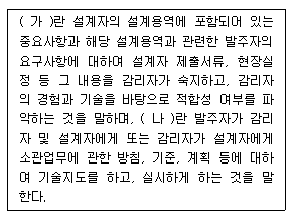
- 가: 확인, 나: 요구
- 가: 검토, 나: 요구
- 가: 검토, 나: 지시
- 가: 확인, 나: 지시
(정답률: 82%)
80. 다음 문장의 괄호 안에 들어갈 내용으로 알맞은 것은?
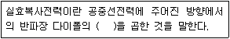
- 절대이득
- 송신전력
- 실효길이
- 상대이득
(정답률: 49%)